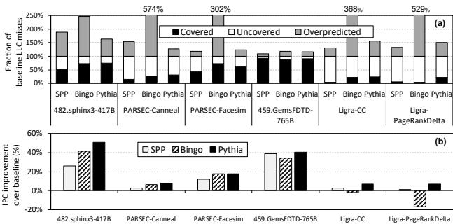

Pythia: A Customizable Hardware Prefetching Framework Using Online Reinforcement Learning 通俗讲解¶
0. 整体创新点通俗解读¶
痛点直击 (The "Why")
- 传统的硬件预取器（Prefetcher）就像一群各怀绝技但又固执己见的工匠。每个工匠（比如 SPP 或 Bingo）只精通一种“线索”（feature），比如程序计数器（PC）或者地址偏移（Delta）。当程序的行为恰好符合他的专长时，他干得漂亮；一旦程序换了个“套路”，他就束手无策。
- 更糟糕的是，这些工匠干活时完全“系统失明”。他们只关心自己预测得准不准，却不管自己的行为会给整个系统带来多大负担。在内存带宽紧张的多核服务器里，一个“好心办坏事”的预取请求，会挤占宝贵的带宽，反而拖慢了整体性能。这就导致很多预取器在桌面单核环境表现优异，一到真实世界的复杂多核场景就“水土不服”。
- 最后，这些预取器的硬件逻辑是固化的。如果你想让它学点新东西，或者换个目标（比如从追求覆盖率变成追求准确性），唯一的办法就是重新设计一块芯片。这在快速迭代的今天是完全不现实的。
通俗比方 (The Analogy) 想象一下你是一个城市的智能交通调度中心。你的目标不是简单地让每辆车都开得快（高覆盖率），也不是让每辆车都不走冤枉路（高准确率），而是要让整个城市的车流效率最高（系统性能最优）。
- 过去的做法是雇佣几个专家：一个只看GPS定位（PC），一个只看历史车速（Delta），他们各自为政，互相不沟通。更糟的是，他们根本不知道现在城市主干道是不是已经堵死了（内存带宽）。
- Pythia的做法完全不同。它把自己变成了一个在线学习的AI调度员。这个调度员每次看到一辆新车（demand request）出现，都会综合所有可用信息（GPS、历史速度、天气、甚至当前全城的拥堵热力图），然后决定是否要提前调度一辆空车（prefetch）到某个位置。
- 每次调度之后，它都会收到一个即时反馈（reward）：如果空车刚好被用上且没造成拥堵，就给高分；如果空车白跑一趟还加剧了拥堵，就给低分。通过这种不断的试错和学习，AI调度员逐渐掌握了在不同路况下（系统配置）如何做出最优决策的本领。
关键一招 (The "How") 作者并没有试图设计一个能覆盖所有情况的、复杂的硬连线逻辑电路。相反，他们做了一个非常巧妙的范式转换：把硬件预取问题重新定义为一个在线强化学习（Online Reinforcement Learning）问题。
- 状态（State）：不再是单一的PC或Delta，而是一个多维度的特征向量，可以同时包含PC、地址、偏移序列等多种信息。这相当于调度员拥有了全景视角。
- 动作（Action）：不是生成一个完整的物理地址，而是选择一个相对偏移量（offset）。这极大地压缩了动作空间，让学习变得可行。
- 奖励（Reward）：这是最核心的创新。奖励函数被精心设计成离散的、多层次的，并且直接耦合了系统级反馈（如内存带宽使用率）。例如，“在高带宽压力下产生一次错误预取”的惩罚，远大于“在低带宽压力下的同样错误”。这迫使学习代理（Agent）必须学会在系统资源紧张时“收敛锋芒”，优先保证准确性。
- 可定制性：整个框架的精髓在于，上述的状态、动作、奖励的具体内容，都可以通过简单的配置寄存器在芯片运行时进行调整。这意味着同一块硬件，可以通过软件配置，瞬间从一个“激进的覆盖率优先”模式，切换到一个“保守的准确性优先”模式，以适应不同的工作负载（如论文中对Ligra图计算 workload 的优化）。
 Figure 1: Comparison of (a) coverage, overprediction, and (b) performance of two recently-proposed prefetchers, SPP [78] and Bingo [27], and our new proposal, Pythia. 这张图完美地诠释了痛点：Bingo 在 PARSEC-Canneal 上表现优异，但在内存带宽需求更高的 Ligra-CC 上，同样的预取行为反而导致了性能下降。而 Pythia 凭借其系统感知能力，在两个场景下都保持了正向收益。
总而言之，Pythia 的核心贡献不是发明了一个新的预取算法，而是提供了一个通用的、可学习的、系统感知的硬件预取框架。它用强化学习的“大脑”取代了传统预取器僵化的“肌肉记忆”，从而实现了前所未有的适应性和鲁棒性。
1. 基于强化学习的预取框架 (ELI5)¶
痛点直击
- 传统的硬件预取器（Prefetcher）设计思路非常“死板”。它们通常只盯着一种程序特征（比如PC地址或者访问步长），然后硬编码一套固定的规则去预测未来访问。这就像一个只会用锤子的工匠，看什么都像钉子。
- 这种单一视角在面对复杂多变的真实程序时就露馅了。当程序行为恰好符合预取器的“口味”时，性能飞起；一旦不符合，它要么瞎猜一通（产生大量无用的预取，浪费宝贵的内存带宽），要么完全失效（覆盖率极低）。更糟糕的是，它们对系统当前的“健康状况”（比如内存带宽是否紧张）毫无感知，即使系统已经不堪重负，还在不停地发出预取请求，反而拖累整体性能。
- 因此，核心痛点在于：缺乏一个能同时理解多种程序上下文、并能根据系统实时反馈动态调整策略的、统一且可定制的预取框架。
通俗比方
- 想象一下你是一个经验丰富的图书管理员（预取器），你的任务是提前把读者（CPU）可能需要的书（数据）放到他们手边的桌子上（Cache）。
- 老派管理员（传统预取器）的做法是：他只记住读者上一次借的书名（单一特征），然后机械地把这本书的续集拿过来。如果读者是在读小说，这招很灵；但如果读者是在查资料，这种方法就完全失效了。
- Pythia这位管理员则完全不同。他不仅看读者上一次借的书，还会观察读者的专业领域（PC）、当前阅读的章节（Page Offset）、翻页的速度和模式（Delta Sequence）等多个线索。更重要的是，他会时刻留意图书馆的繁忙程度（内存带宽使用情况）。如果今天人特别多（带宽紧张），他就会变得非常谨慎，只拿最有把握的那本书；如果今天很清闲（带宽充裕），他可能会大胆地多拿几本相关的书放在旁边。他通过不断观察读者是否真的用了他拿的书（奖励信号），来学习和优化自己的判断。久而久之，他就成了一个既懂读者又懂图书馆运营的智能管家。
关键一招
- 作者并没有试图设计一个更复杂的、基于规则的预取器，而是做了一个根本性的范式转换：将整个预取决策过程建模为一个强化学习（RL）问题。
- 具体来说，他们做了三件事：
- 状态（State）：将多种程序特征（如PC+Delta, Delta序列等）拼接成一个状态向量。这相当于给RL智能体提供了全面的观察视角。
- 动作（Action）：将预取决策简化为选择一个预取偏移量（prefetch offset），而不是完整的地址。这极大地压缩了动作空间，让学习变得可行。
- 奖励（Reward）：设计了一套精细化的奖励机制，这个机制不仅考虑预取是否准确、及时，还显式地融入了系统级反馈（内存带宽使用情况）。例如，在高带宽压力下产生一个错误预取，会受到比低压力下更严厉的惩罚（
R_inacc_highvsR_inacc_low）。
- 最巧妙的逻辑转换在于：通过这套RL框架，预取器的学习目标不再是最大化某种孤立的指标（如覆盖率），而是最大化一个综合了准确性、时效性和系统资源消耗的长期累积奖励。这使得预取器能够自主地、在线地在不同场景下做出最优权衡。此外，整个框架是高度可配置的，只需通过寄存器改变特征组合或奖励值，就能针对不同工作负载进行定制，而无需改动硬件结构。
 Figure 3: Formulating the prefetcher as an RL-agent.
Figure 3: Formulating the prefetcher as an RL-agent.- 为了在硬件上高效实现这个RL智能体，作者设计了QVStore（Q值存储）这一核心数据结构。它采用分层的Vault-Plane架构，利用Tile Coding思想，既能高效处理高维状态，又能保证查询延迟足够低，满足硬件流水线的要求。

2. 分层Q值存储结构 (QVStore) (ELI5)¶
痛点直击
- 传统的强化学习（RL）在硬件中实现时，最大的“难受”点在于 Q值表的规模爆炸。状态（state）是由多个程序特征（如PC、地址、Delta等）组成的高维向量，每个维度稍有变化，整个状态空间就呈指数级增长。
- 如果用一个巨大的单表来存所有状态-动作对的Q值，硬件开销会大到无法接受，根本塞不进芯片。
- 但如果简单地对状态进行哈希或量化来压缩表格，又会引发 “灾难性干扰”（catastrophic interference）：两个完全不相关的状态被映射到同一个表项，互相覆盖、污染彼此的Q值，导致学习完全失效。这就陷入了“顾头不顾尾”的困境：要么表太大，要么学不准。
通俗比方
- 想象你要为一本超级厚的字典（状态空间）建立索引。如果只为每个词建一个唯一的索引卡（单一大表），你的卡片盒会大到放不下。
- Pythia的做法很聪明：它不为整词建索引，而是为词的每个组成部分（比如偏旁部首）分别建一套独立的、小得多的索引卡堆（vault）。
- 当你要查一个词（状态）时，你不是去找一张总卡，而是去并行查询所有偏旁部首对应的卡堆，把每个卡堆里找到的分数（partial Q-value）加起来，得到这个词的最终分数。
- 而且，为了防止“木”字旁和“水”字旁的卡片互相干扰，每个偏旁的卡堆内部还用了多套略有重叠的分类法（plane）。这样，“林”和“森”这种相似的字会被分到相近但不完全相同的格子里，既能共享信息（泛化），又能保持各自的独特性（分辨率）。
 Figure 5: (a) The QVStore is comprised of multiple vaults. (b) Each vault is comprised of multiple planes. (c) Index generation from feature value.
Figure 5: (a) The QVStore is comprised of multiple vaults. (b) Each vault is comprised of multiple planes. (c) Index generation from feature value.
关键一招
- 作者没有试图去构建一个存储完整状态-动作Q值的巨型表，而是巧妙地将Q值的计算分解了。
- 核心逻辑转换：将
Q(完整状态, 动作)的查询，替换为Max(Q(特征1, 动作), Q(特征2, 动作), ..., Q(特征k, 动作))的计算。 - 这个转换带来了两个巨大好处：
- 可扩展性：现在，增加一个新的程序特征，只需要添加一个新的vault即可，完全不影响已有的结构。这就像给字典索引系统增加一个新的偏旁部首分类，非常灵活。
- 硬件友好：每个vault只负责一个低维特征，其规模可控。更重要的是，每个vault内部采用了tile coding思想，通过多个plane（小表）的叠加，用很小的硬件代价就实现了高分辨率和良好的泛化能力，完美避开了“灾难性干扰”问题。
3. 可配置的多特征状态空间与奖励机制 (ELI5)¶
痛点直击
- 传统的硬件预取器（如SPP、Bingo）就像一个只会用一种工具的工匠。SPP擅长识别地址序列中的“步长”模式，Bingo则精于利用首次访问来预测整个内存区域的足迹。问题在于，现实世界的程序千奇百怪，有的场景下SPP效果拔群，换到另一个场景可能Bingo更优，甚至两者都失效。
- 更致命的是，这些预取器是“系统盲”的。它们只关心自己预测得准不准（accuracy），却完全不顾及自己的行为对整个系统的影响。在内存带宽充裕时，多发几个错误的预取请求（overprediction）可能无伤大雅；但在多核或带宽受限的服务器场景下，每一个错误的预取都在浪费宝贵的带宽，甚至会拖垮整体性能，导致“好心办坏事”。图1(b)中Bingo在Ligra-CC上性能反而不如关闭预取，就是这个原因。
- 最后，硬件一旦流片，其逻辑就固化了。如果想让它适应新 workload 或改变优化目标（比如从追求高覆盖率转向极致准确性），唯一的办法就是重新设计、流片，成本极高。
通俗比方
- 想象你是一个餐厅的采购经理。以前的做法是：
- 单一特征：要么只看昨天卖了多少份牛排（PC-based），要么只看仓库里还剩多少土豆（Address-based）。但生意好坏受天气、节假日、新菜品等多种因素影响，单看一个指标很容易买多或买少。
- 缺乏系统意识：你只关心“预测销量”的准确率，却不管物流公司的运力（memory bandwidth）。在物流旺季，你下的每一个多余订单都会占用卡车空间，导致其他真正需要的食材送不进来，反而让餐厅运营更差。
- Pythia的做法完全不同。它相当于一个配备了可插拔传感器和智能反馈仪表盘的现代采购系统。
- 它的“状态”不是单一数据，而是一个多维向量，可以同时接入“昨日销量”、“天气预报”、“社交媒体热度”等多个数据源（即PC+Delta, Sequence of Deltas等程序特征）。
- 它的“奖励”也不是简单的对错，而是一个精细的评分卡：不仅看你预测准不准，还要看你下单时物流是否繁忙。物流空闲时，大胆预测的奖励高；物流拥堵时，保守一点、宁可少订也不错订的策略反而得分更高。
- 最关键的是，这套系统的“传感器组合”和“评分卡规则”都可以通过后台配置动态调整，无需重建整个采购部门。
关键一招
- 作者的核心洞察是：硬件预取问题本质上是一个在线决策优化问题，而非单纯的模式识别问题。因此，他们没有去设计一个更复杂的模式匹配电路，而是将整个预取器重构为一个强化学习（RL）Agent。
- 这个Agent的状态空间（State Space） 被设计成一个可配置的多维特征向量。在硬件实现上，这体现为一个由多个独立“Vault”组成的Q值存储结构（QVStore）。每个Vault负责处理一种特征（如PC+Delta），最终的决策是综合所有Vault意见的结果。这种模块化设计使得在线切换特征组合成为可能。
- 其奖励机制（Reward Scheme） 被精心设计为五个离散级别，并显式地将内存带宽使用情况作为上下文信息融入其中。具体来说，对于“不准确”的预取和“不预取”的决策，都分别定义了在高带宽和低带宽两种场景下的不同奖励值（如R_inacc_low_bw vs R_inacc_high_bw）。
- 这一招的巧妙之处在于，RL Agent在与环境（处理器+内存子系统）交互的过程中，会自动学习到：在带宽紧张时，应该主动降低预取的激进度，牺牲一部分覆盖率来换取更高的准确性，从而避免对系统造成负面影响。这种自适应的权衡能力，是任何静态、单一特征的预取器都无法做到的。 Figure 3: Formulating the prefetcher as an RL-agent.
4. 评估队列 (Evaluation Queue, EQ) (ELI5)¶
痛点直击
- 传统硬件预取器（Prefetcher）最大的问题在于“开环”：它发出一个预取请求后，就撒手不管了。它不知道这个请求后来是命中了（有用）、还是污染了缓存（有害），更不知道在当前内存带宽紧张的情况下，一次错误的预取代价有多高。
- 这导致了一个根本矛盾：预取器的目标是提升性能，但它做决策时用的信息（如PC、地址Delta）和最终衡量它好坏的标准（系统整体IPC）之间存在巨大的鸿沟。它无法建立“我的某个决策 -> 系统反馈 -> 我下次该怎么做”的闭环学习机制。
通俗比方
- 想象你是一个餐厅的采购经理（预取器）。你的任务是提前买菜（预取数据），保证厨师（CPU核心）做菜时不会断料。
- 老派做法：你只看今天的菜单（PC）和昨天的销量（地址历史），然后凭经验下单。但你从不关心：
- 菜买回来后，到底用了多少？（准确性）
- 菜是不是放太久坏了？（时效性）
- 今天物流特别堵（带宽紧张），你多订一车没用的菜，会不会耽误了别人急需的食材？
- Pythia的做法：你随身带一个小本子（Evaluation Queue, EQ）。每当你下一笔订单（预取动作），你就把订单详情（预取地址）记在本子上。等厨师开始做菜时，如果他用到了你买的菜，你就立刻翻到小本子对应的那一页，打个勾，并根据当时物流状况给这次采购打个分（奖励）。月底（当这条记录被挤出小本子时），你就根据这个分数来调整你未来的采购策略。这个小本子就是你的实时绩效追踪系统。
关键一招
- 作者并没有设计一个复杂的离线评估模块，而是巧妙地在预取流水线中插入了一个轻量级的、先进先出（FIFO）的追踪队列——EQ。
- 这个队列的核心作用是延迟奖励分配和建立因果关联，具体流程如下：
- 插入记录：每当Pythia基于当前状态（State）做出一个预取决策（Action）并生成一个预取地址时，它会立即将
<状态, 动作, 预取地址>这条记录推入EQ队尾。 - 在线验证：当后续有需求访问（Demand Request） 到达时，Pythia会立刻用这个地址去查询EQ。
- 如果命中，说明之前的预取是有用的。此时再检查该记录的
filled位：- 如果
filled为真，说明数据已经提前加载好了，这是一次准确且及时的预取，给予高奖励 R_acc_t。 - 如果
filled为假，说明需求来得比预取还快，这是一次准确但迟到的预取，给予较低奖励 R_acc_l。
- 如果
- 如果命中，说明之前的预取是有用的。此时再检查该记录的
- 兜底惩罚：如果一条记录在EQ里待到被挤出去（evicted）时都还没被需求访问命中，那就说明这次预取完全失败了。此时，Pythia会根据当前的内存带宽使用情况，给予不同程度的惩罚（R_inacc_hb 或 R_inacc_lb）。
- 插入记录：每当Pythia基于当前状态（State）做出一个预取决策（Action）并生成一个预取地址时，它会立即将
- 通过这个简单而精妙的队列机制，Pythia成功地将一个原本无状态、开环的预取过程，转变为一个有记忆、闭环的强化学习过程。每一次预取决策的长期价值都能被精确量化，并用于更新其内部的Q值表（QVStore），从而实现持续优化。
 Figure 4: Overview of Pythia.
Figure 4: Overview of Pythia.